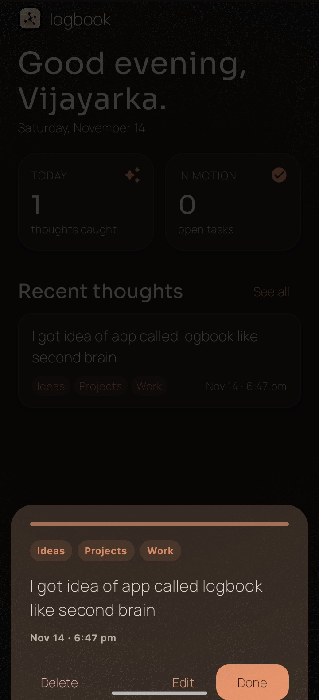

Install
Get Logbook from the latest release and install it on your Android phone.
- Download app-debug.apk from the release page.
- Open the downloaded file. If Android asks, allow installs from your browser or file manager.
- Tap Install, then open Logbook.
To build from source, run this command and find the APK at app/build/outputs/apk/debug/app-debug.apk:
gradle --no-daemon :app:assembleDebug
Make it yours
Logbook is ready for your thoughts without an account or setup. Two permissions are optional.
- Notifications let local task alarms and friendly nudges reach you.
- Microphone lets you dictate a thought.
If you decline either one, typing and the rest of the app still work.
Catch a thought—and reconnect it
Tap the round + button at the bottom right. Type a thought or dictate with Android’s on-device speech recognition when available. There is no remote speech fallback.
As your draft takes shape, Logbook compares its keywords with saved thought text, shelves, and attributes. When it finds a close match, it can surface up to two related thoughts while you write and again during review. Tap one to browse its shelf.
This is a private reminder of what you have already captured, not an automatic duplicate detector. Matching happens on your phone; it can miss connections, and you stay in control of what you save.
Your day, at a glance
Today counts the thoughts you caught. In motion shows how many tasks remain open.
Things in motion puts your next tasks on Home—up to two at a glance—with their due dates when set. Tick one off when it is done. Recent thoughts brings your latest notes back into view with their shelves and time.
Swipe a thought to the left to reveal Delete. The bottom bar switches between Home, Search, Hubs and Settings. The small search button above the + opens search from anywhere.

Review, connect, then choose
After capture, take a quick second look. Logbook may show up to two related thoughts to help you reconnect the idea with something you saved before.
- Edit the text in the box.
- Under Suggested shelves, tap labels to keep or remove them. A note can sit on several shelves.
- Type your own label and tap Add.
- Check Noticed to see the words and names Logbook picked up.
- Tap Save thought. If Logbook notices action wording, you can choose to add a task, then select a due date or save it without one.
Shelves and related-thought matches use local phrase and keyword rules, not a cloud AI. Suggestions are prompts for you to review—not decisions made on your behalf.

Open a thought
Tap a thought and it opens like a sticky note with its shelves, text and time.
- Edit changes the text or labels.
- Done closes the note view. On a task, it marks the task finished.
- Delete removes the thought.

Turn a thought into a next step
When local phrase rules notice action wording—such as “call Maya Friday”—Logbook can offer to turn the thought into a task. You decide whether to add it.
- Choose Also put it in Things in motion during review.
- Before saving, choose a due date or explicitly save the task without one. A date and time in your wording can also be recognized.
- Dated tasks can have a local alarm. Completed, deleted, and cleared tasks cancel their alarms.
- Unfinished alarms are restored after your phone restarts.
Find
Open Search and start typing under Find a thought. Results update as you type.
You can search words, links, people, dates, shelves and recurring topics. Tap a shelf chip such as Ideas, Projects, Work or Learning to narrow results. All clears the filter.

Follow recurring threads
Open the Hubs tab to browse people, projects, and topics that keep appearing in your saved thoughts. Hubs make recurring context easier to revisit; they are built from information on your phone.
A gentle daily check-in
Turn on optional morning or evening nudges in Settings and choose their times. The morning message can include your actual open-task count; the evening message asks how the day went.
These are friendly check-ins, not task alarms. Due-date alarms are managed separately with each task.
Export and privacy
In Settings you can export or import a JSON copy whenever you choose. Exports contain your personal writing, so pick a destination you trust.
- The app has no account, sync, ads, analytics, network AI or remote speech.
- The manifest has no INTERNET permission.
- Automatic cloud and device backup are off.
FAQ
Does Logbook need internet?
No. The app is not allowed to use the network at all.
How does Logbook find related thoughts?
It compares keywords in your draft with text, shelves, and attributes in saved thoughts, entirely on your device. It can surface up to two likely matches. This is local keyword matching—not AI—and it may miss a connection.
Does it automatically block duplicate notes?
No. Related-thought cards are suggestions to revisit your own notes. You choose whether to open a match or save the new thought.
Is AI reading my notes?
No. Labels, dates, tasks, and related-thought matches come from local rules on your phone.
A suggested label is wrong. What now?
Tap it on the review screen to remove it, or add your own. Your choice is what gets saved.
I declined a permission. Can I still use Logbook?
Yes. Without notifications you won't get alarms or nudges. Without the microphone you can still type.
Will my alarms survive a restart?
Yes. Unfinished task alarms are restored after reboot.